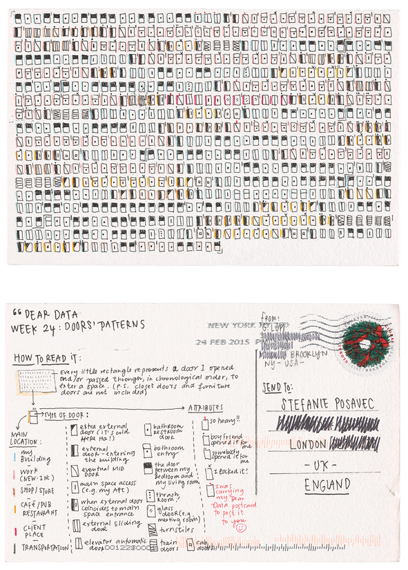
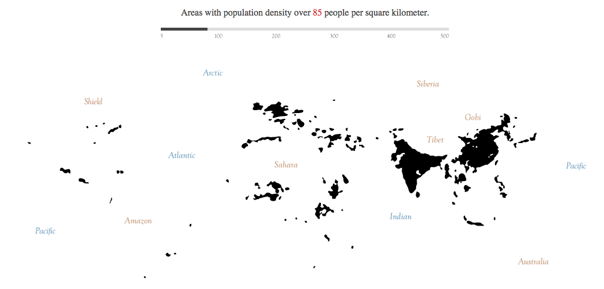
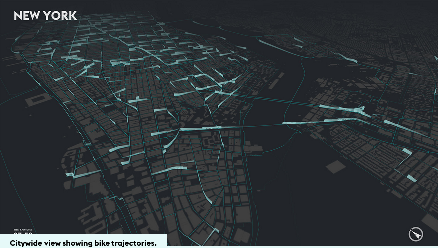

Welcome!
Welcome!

ProcessingJS
For Beginners
A hand-drawn representation of every door one person walked through in a given week.

A vector illustration of world population densities.

A live view of where NYC bikeshare bikes are travelling.

The Draw function
draw() is a method in Processing that actually adds elements to your canvas. It draws on your canvas.
The draw() method is not static, though. It keeps repeating over and over and over again. It's a constantly running loop. draw() is triggered 60 times per second, or once every 160 milliseconds.
This means you can play with changing rules that govern how your visualization draws itself. That will become a lot of fun later today.
#Your first drawing
With your draw() function in place, you can now begin to add commands that will actually draw on the canvas. Directly below the comment, start playing with the rect() method.
```
function sketchProc(processing) {
processing.setup = function() {
//the code for your basic setup functions goes here
processing.size(700,500);
}
processing.draw = function() {
//The code to describe what you want to draw goes here.
processing.rect(10,20,130,260);
};
}
var canvas = document.getElementById("myProcessingProject");
// attaching the sketchProc function to the canvas
var processingInstance = new Processing(canvas, sketchProc);
```
Extra resources
To keep you going, here are some extra links relating to ProcessingJS that you may find useful.
Resources for data visualization
Data visualization is a complex job, and creativity drives most of it. The technical side is just code. Here are some great resources to get your brain in the right gear.